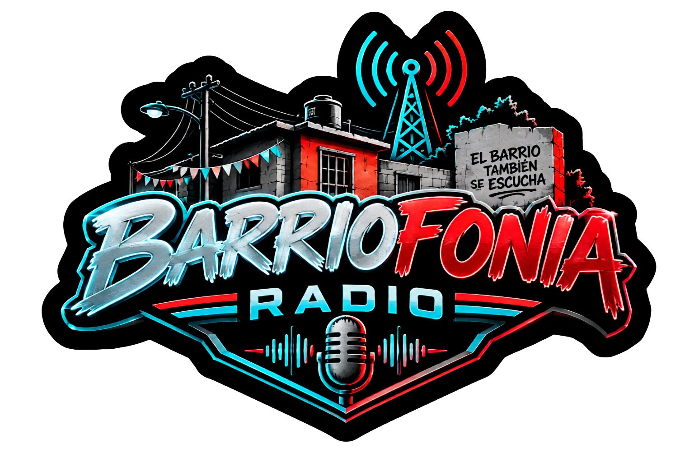

Presiona Play para escuchar nuestra señal.
BarrioFonia Radio — El barrio también se escucha.
Somos una radio por internet independiente que nace desde el barrio para conectar voces, compartir historias y acompañar a nuestra gente. En BarrioFonia creemos que la comunicación no es exclusiva de los grandes medios: las calles, las comunidades y sus habitantes también tienen mucho que decir.
Nuestra propuesta combina música, entretenimiento, cultura, información y expresión comunitaria, con una identidad auténtica, cercana y sin poses. Queremos dar espacio a los sonidos que nos representan, a las historias que merecen contarse y a las voces que pocas veces encuentran un micrófono abierto.
Desde el barrio, para todos lados. Porque aquí la radio no solo se escucha: se vive, se comparte y se construye entre todos.
BarrioFonia Radio — ¡El barrio también se escucha!